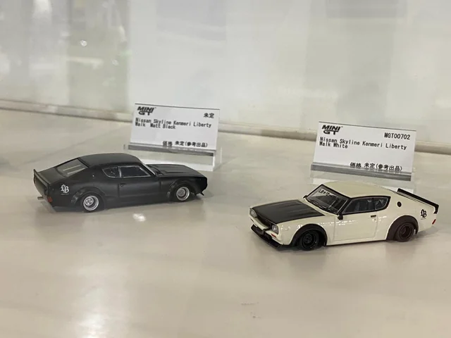
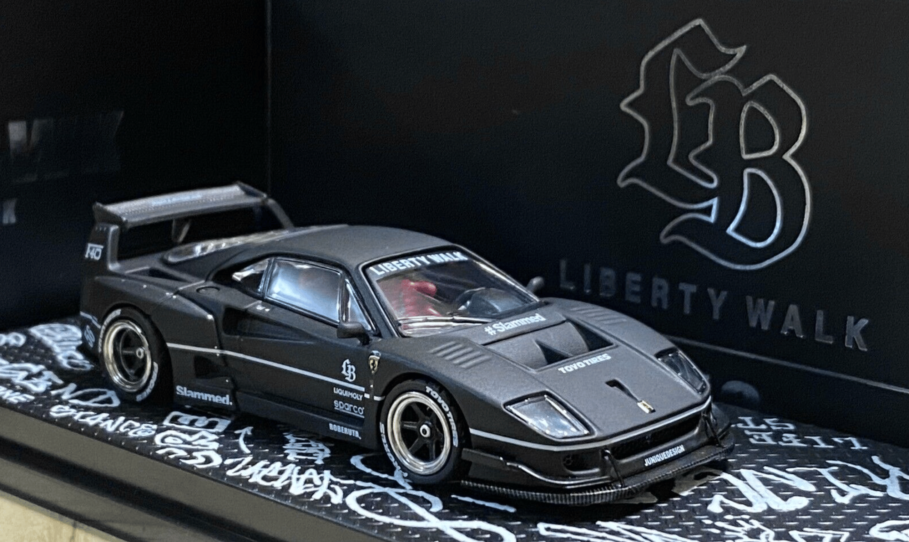
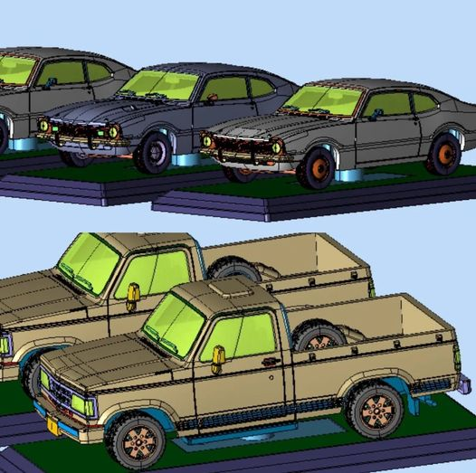
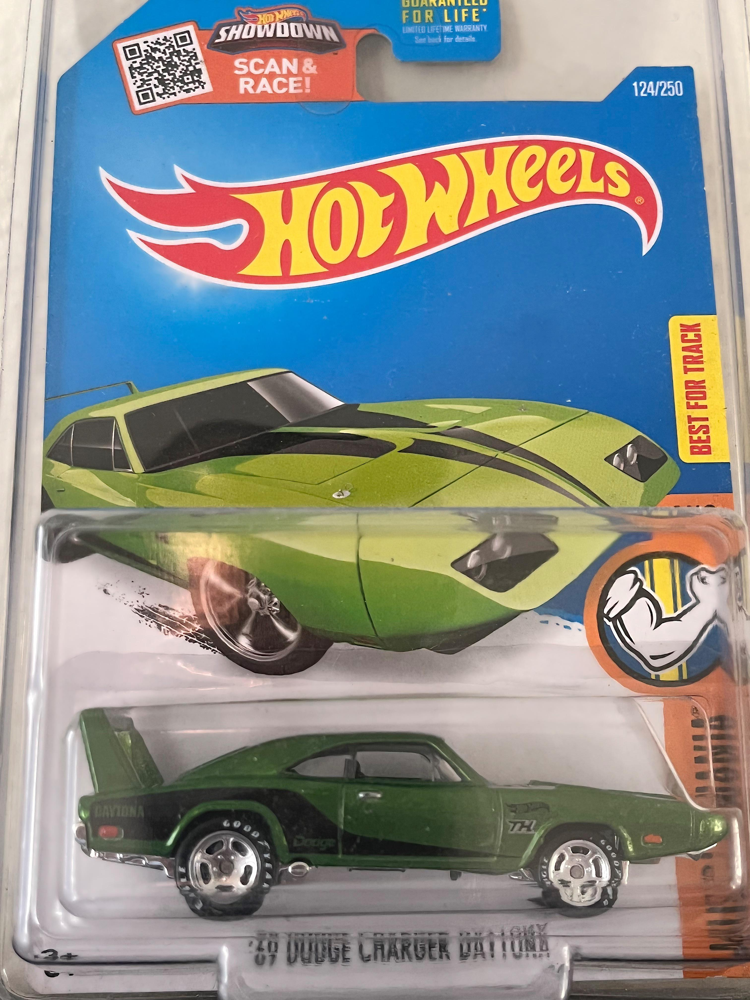

Novidades da Mini GT para 2024

12/01/2023 | 2 comentários
Durante o Tokyo Auto Salon 2024, a fabricante de miniaturas Mini GT anunciou suas novidades para o ano, que incluem modelos novos e outras pinturas de miniaturas que já foram lançadas, além de um GT-R dourado exclusivo para o evento.
Continuar lendo
A polêmica das Ferraris da Inno64

09/01/2023 | 5 comentários
Devido a um novo acordo de licenciamento entre LBWK e Mini GT, a Inno64 ficará impossibilitada de criar novos modelos de LBWK a partir de 2024, modelos esses que impulsionaram as vendas da marca no final do ano de 2023.
Continuar lendo
Mais clássicos brasileiros em escala 1:64

07/01/2023 | 1 comentário
Dando continuidade ao sucesso das miniaturas de Chevrolet Opala, a BR Classics planeja, para 2024, fabricar miniaturas dos clássicos Ford Maverick e Chevrolet D20, além dos modelos Gol GTI, Parati GLS, Saveiro Summer e Kadett GSI, que foram anunciado há pouco tempo.
Continuar lendo
Hora de história: A variação de pneu no Charger Daytona STH

03/01/2024
Provavelmente causado por funcionários da Mattel, uma pequena leva de Dodge Charger Daytona STH foi vendida com rodas diferentes das originais, causando grande confusão na comunidade e uma grande ascenção de preço entre colecionadores.
Continuar Lendo